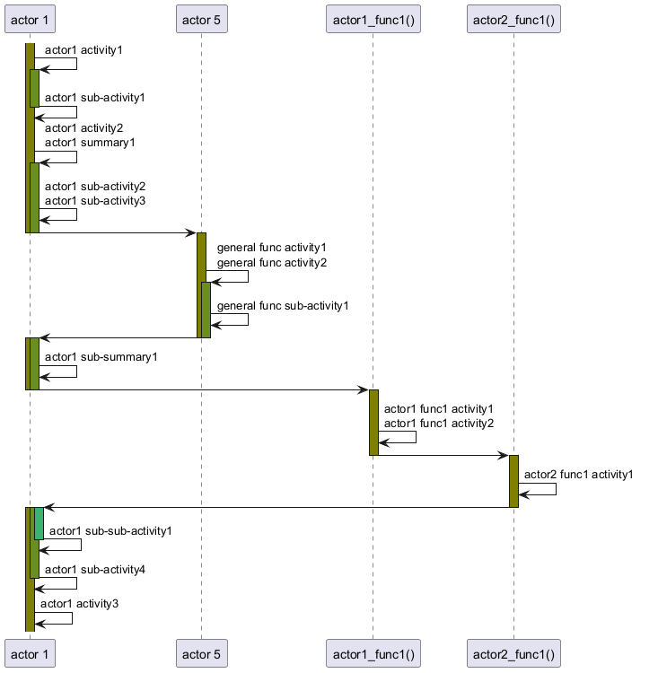

@startuml
'
' 1 - some activation lines separated by messages
'
activate "actor 1" #Olive
"actor 1" -> "actor 1": actor1 activity1
activate "actor 1" #OliveDrab
"actor 1" -> "actor 1": actor1 sub-activity1
deactivate "actor 1"
"actor 1" -> "actor 1": actor1 activity2\nactor1 summary1
activate "actor 1" #OliveDrab
"actor 1" -> "actor 1": actor1 sub-activity2\nactor1 sub-activity3
"actor 1" -> "actor 5" :
deactivate "actor 1"
deactivate "actor 1"
activate "actor 5" #Olive
"actor 5" -> "actor 5": general func activity1\ngeneral func activity2
activate "actor 5" #OliveDrab
"actor 5" -> "actor 5": general func sub-activity1
"actor 5" -> "actor 1" :
deactivate "actor 5"
deactivate "actor 5"
'
' 2 - some activation lines in sequence
'
activate "actor 1" #Olive
activate "actor 1" #OliveDrab
"actor 1" -> "actor 1": actor1 sub-summary1
"actor 1" -> "actor1_func1()" :
deactivate "actor 1"
deactivate "actor 1"
activate "actor1_func1()" #Olive
"actor1_func1()" -> "actor1_func1()": actor1 func1 activity1\nactor1 func1 activity2
"actor1_func1()" -> "actor2_func1()" :
deactivate "actor1_func1()"
activate "actor2_func1()" #Olive
"actor2_func1()" -> "actor2_func1()": actor2 func1 activity1
"actor2_func1()" -> "actor 1" :
deactivate "actor2_func1()"
'
' 3 - some further activation lines in sequence
'
activate "actor 1" #Olive
activate "actor 1" #OliveDrab
activate "actor 1" #MediumSeaGreen
"actor 1" -> "actor 1": actor1 sub-sub-activity1
deactivate "actor 1"
"actor 1" -> "actor 1": actor1 sub-activity4
deactivate "actor 1"
"actor 1" -> "actor 1": actor1 activity3
@enduml